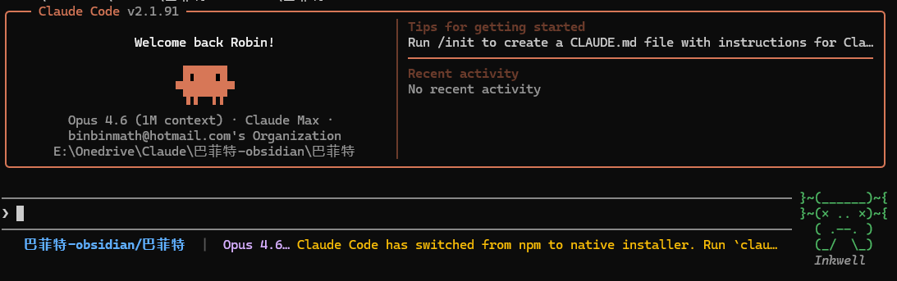
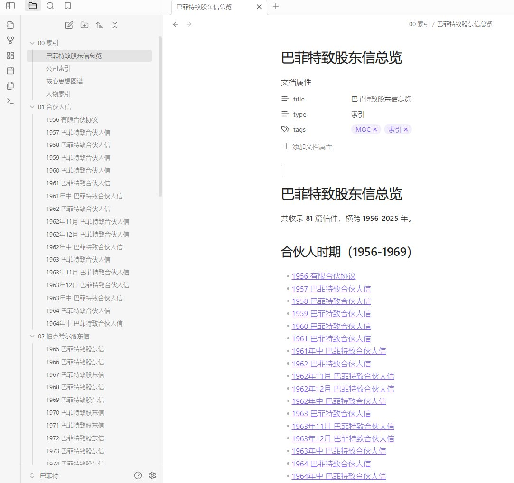
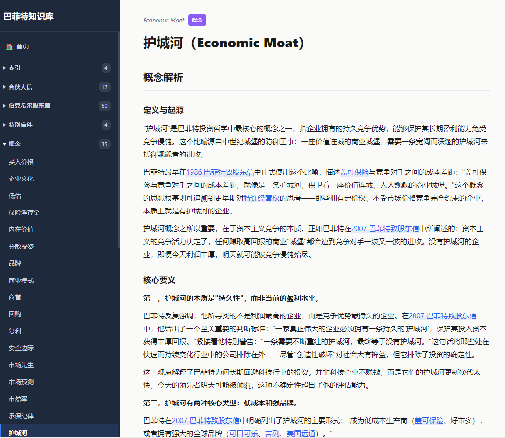
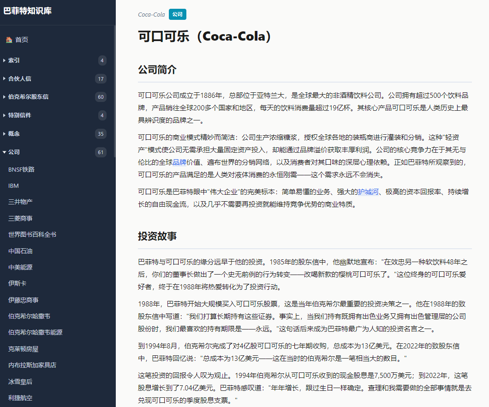
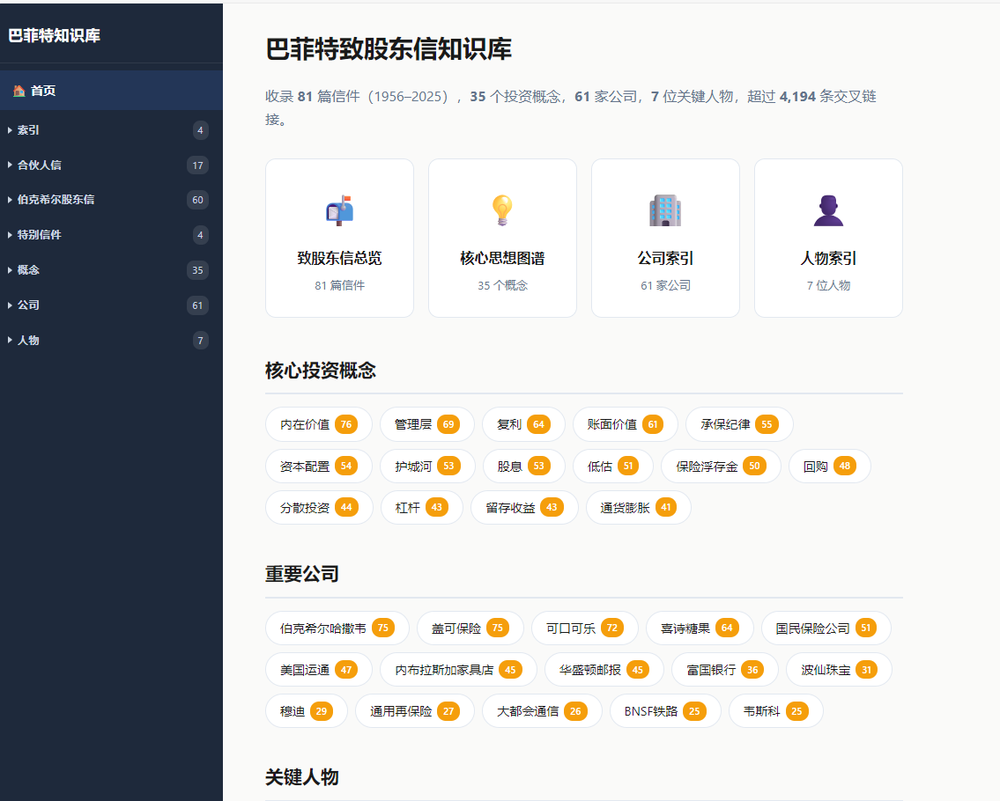

两天时间，我把巴菲特70年的股东信变成了知识图谱
- Source: https://x.com/binbinmath/status/2040690438122987762
- Author: @binbinmath
- Created: 2026-04-05T07:18:09Z
两天时间，我把巴菲特70年的股东信变成了知识图谱
一个疯狂的念头
事情的起因很简单。
有一天晚上，我在读巴菲特2024年的股东信，读到他说可口可乐从1994年给伯克希尔分红7500万美元，到2022年涨到了7.04亿美元——同一笔投资，分红翻了将近10倍。
我当时就愣住了。
一个疯狂的念头
事情的起因很简单。
有一天晚上，我在读巴菲特2024年的股东信，读到他说可口可乐从1994年给伯克希尔分红7500万美元，到2022年涨到了7.04亿美元——同一笔投资，分红翻了将近10倍。
我当时就愣住了。
让我愣住的不是这个数字本身——我突然意识到： 巴菲特从1956年写第一封合伙人信到现在，整整70年，几乎每年都在用最真诚的方式，向股东解释他是怎么思考的。
70年。81封信。这可能是人类商业史上最长、最真诚、最有价值的一套投资教科书。
但问题是——它太散了。
你想了解"护城河"这个概念，得翻十几封信；你想追踪可口可乐这笔投资的全部故事，得从1988年读到2024年；你想理解巴菲特对复利的认知是怎么一步步深化的，得把横跨半个世纪的只言片语拼在一起。
于是我产生了一个疯狂的念头：
能不能把这70年的所有信，全部翻译成中文，然后建成一个互相关联的知识图谱？
让每一个投资概念、每一家公司、每一个关键人物，都变成一个可以点击进去、四通八达的节点。像一座你可以"住进去"的知识城堡，而不只是一个书架。
说实话，想到这个的时候，我自己都觉得有点不切实际。
81封信，每封少则几千字，多则上万字。翻译只是第一步，还要提炼概念、建立关联、统一格式、交叉引用……
如果纯靠手工，这大概是一个以"年"为单位的工程。
但我有Claude Code。


从第一封信开始
我是这样干的。
打开终端，进入项目目录，给Claude Code一个清晰的指令：先从巴菲特1957年的第一封合伙人信开始，翻译成中文，提取核心概念，用Obsidian的格式输出。
Claude Code的反应速度让我有点意外。
它不只是翻译——它理解上下文。巴菲特在1957年那封信里提到的"low-estimate situations"和"general issues"，它翻译成"低估类投资"和"大盘跟随型投资"，然后自动识别出这是两个值得单独建档的投资概念。
更妙的是，当我让它处理后面的信件时，它会主动说："这封信里提到的'护城河'概念，和之前1995年信里的表述有演变，要不要更新概念文件？"
与其说它是翻译机器，不如说它是一个和你一起读书的研究伙伴。
我们形成了一个高效的工作流：
我提供原文（英文股东信PDF）
Claude Code翻译全文，保持巴菲特的语气和行文风格
自动提取关键概念、公司、人物，标注为 [[双括号链接]]
生成标准化的YAML元数据头（标题、日期、类型、标签）
我审阅，调整，确认
一封信，从原文到完整的知识节点，大概20-30分钟。
但关键来了——Claude Code支持同时启动多个Agent并行工作。我一口气开了5个Agent，每个负责一批信件，同时翻译、同时提取概念、同时生成链接。
81封信，一个下午，全部翻译完成。
知识库的骨架：不只是翻译
翻译81封信，其实只是地基。
真正让这个项目变得不一样的，是上面的三层知识架构：
第一层：35个投资概念
我和Claude Code一起，从81封信里提炼出了35个巴菲特反复提及的核心概念：
翻译信件：81封，跨越70年（1956-2025）
知识库文件：188个
投资概念卡片：35个
公司档案：61个，人物档案：7个
内部交叉链接：4,194条
翻译耗时：1个下午（5个Agent并行）
总项目耗时：约2天（含网站部署上线）
每个概念都是一个完整的知识卡片，远比干巴巴的定义丰富得多：
• 定义与起源——这个概念最早出现在哪封信
• 核心要义——3-4个子论点
• 实战案例——具体到哪家公司、什么年份、多少钱
• 常见误解——巴菲特本人怎么纠偏的
• 思想演变——从50年代到2020年代，同一个概念是怎么深化的
• 原话引用——5-10条巴菲特的原文
比如"复利"这个概念，Claude Code帮我追踪了它在64封信中的演变轨迹：
1956-1969年：复利是业绩衡量的工具，巴菲特用它说服合伙人 1970-1989年：复利变成了选股标准——他开始寻找"能让复利自动运转的企业" 1990-2009年：复利增速下降，巴菲特坦承规模是复利的敌人 2010-2025年：复利上升为哲学——不只是投资，而是人生的底层逻辑
一个概念，四个时代，四种深度。 这是任何一本巴菲特的书都不会这样帮你梳理的。


第二层：61家公司档案
巴菲特70年里提到过的每一家重要公司，都有自己的档案页：
• 盖可保险GEICO（75封信提及）：从1951年格雷厄姆推荐，到1996年全资收购，到2024年重新焕发活力
• 可口可乐（72封信提及）：13亿美元的投资，如何变成了一台永不停歇的分红机器
• 喜诗糖果（64封信提及）：巴菲特亲口说"它教会了我什么是好生意"
每个公司档案都链接回了提到它的每一封信，也链接到了它所体现的每一个投资概念。
你点开"可口可乐"，能看到巴菲特40年间对它说过的每一句话。你再点"护城河"，能看到巴菲特用哪些公司来解释这个概念。知识就这样，像水一样流动起来了。

第三层：7位关键人物
格雷厄姆、芒格、阿吉特·贾恩、格雷格·阿贝尔……
每个人物档案记录了巴菲特在信中对他们的每一次评价。你可以看到芒格在48封信中的形象是如何从"我的合伙人"变成"改变了我整个投资框架的人"的。
一些让我自己都惊讶的发现
在建这个知识库的过程中，有几个发现让我印象深刻：
发现一：巴菲特的"认错"频率远比你想象的高。
当你把70年的信放在一起看，你会发现巴菲特几乎每隔几年就会用一整段来详细解释自己犯了什么错。德克斯特鞋业（Dexter Shoe）、美国航空……他不是轻描淡写地带过，而是会详细分析自己的思维过程哪里出了问题。
2024年的信里，他还在反思几十年前的错误。
发现二："护城河"这个词，巴菲特到1995年才第一次正式使用。
但这个概念的雏形——他叫"特许经营权"——在1970年代就反复出现了。概念没变，但表达方式进化了。如果你只读近十年的信，你会以为"护城河"是一个一成不变的概念。但知识库里的时间线告诉你：它是活的，它在生长。
发现三：芒格对巴菲特的影响，比大多数书里写的还要深。
48封信的提及记录清晰地显示，巴菲特的投资框架在1970年代中期发生了一次根本性转变——从格雷厄姆式的"捡烟蒂"转向了"用合理价格买好公司"。而这个转变的每一步，都有芒格的影子。
这些发现，不是我刻意去找的。是知识库建完之后，概念之间的关联自己浮现出来的。
这就是知识图谱的力量——它让你看到单篇阅读永远看不到的东西。
Claude Code到底帮了什么
说到这里，我想诚实地聊一下Claude Code在这个项目里的角色。
它不是魔法。它是一个极其强大的杠杆。
具体来说，Claude Code帮我做了这些事：
1. 高质量翻译——不是逐字翻译，而是理解巴菲特的语境后进行意译。巴菲特的幽默、他的自嘲、他那种"跟朋友聊天"的语气，大部分都保留了下来。
2. 概念识别与关联——读完一封信后，它能准确识别出"这里在讲护城河""这里提到了浮存金""这个公司之前在1987年的信里也出现过"。这种跨文档的记忆力，是人类很难比拟的。
3. 格式标准化——188个文件，每一个都有统一的YAML元数据、统一的章节结构、统一的链接格式。如果手工做，光是保持格式一致就能让人崩溃。
4. 频次统计与图谱建设——"内在价值在76封信中出现""复利被提及64次"这类统计，Claude Code在处理过程中自然就完成了。
但我也想说清楚Claude Code 没有 帮我做的事：
选题判断是我的。 为什么选巴菲特？为什么选Obsidian？为什么用这样的三层架构？这些决策都是人做的。
质量把关是我的。 我会抽查翻译质量，审核关键概念卡片的准确性。AI会犯错——有时候它会把一个比喻当成字面意思，有时候它会漏掉一个重要的上下文。我的工作是定规则、抽样检查、纠偏方向。
知识洞察是共同的。 那些让我惊讶的发现，有些是我在审阅过程中注意到的，有些是Claude Code在处理时主动指出的。这是一种真正的人机协作——各自发挥各自擅长的部分。
最终成果：一些数字
如果没有Claude Code，这个项目保守估计需要半年到一年。
不是因为翻译难——机器翻译早就能做基本翻译了。难的是理解、提炼、关联和结构化。这四件事，过去只有人能做，而且极其耗时。
而现在，5个Agent并行工作，一个下午翻译完81封信；第二天构建网站、部署上线。2天，从零到一个完整的在线知识库。
从Obsidian笔记到互联网：一行命令部署上线
知识库在本地建好之后，我想：这么好的东西，不应该只有我一个人能看。
于是我又让Claude Code干了一件事——把整个本地知识库变成一个任何人都能用浏览器打开的网站。
整个过程比我想象的简单得多：Claude Code自动把188个文件转换成网页，生成首页和导航，然后一键发布到网上。我全程没有打开过任何代码编辑器，也没有手动配置过任何服务器。
就这样，一个完整的巴菲特知识库网站就上线了：
https://buffett-letters-eir.pages.dev/

你可以在左侧导航栏按类别浏览——合伙人信、伯克希尔股东信、概念、公司、人物。每个页面的内部链接都是可点击的，你可以像在维基百科一样，从一封信跳转到一个概念，再跳转到一家公司，在知识网络里自由漫游。
网站托管免费，不用操心维护，随时可以访问。
写在最后：AI时代，我们该怎么学习
做完这个项目，我最大的感受是：
AI时代的学习，关键不在于"让AI帮你读书"，而在于"和AI一起建造知识的建筑"。
巴菲特的70年股东信，AI可以帮你秒速总结成一页纸的要点。但那样的总结，你读完就忘了。
而当你亲自参与知识库的构建——决定分类方式、审核每一个概念、发现概念之间的隐藏关联——这些知识就真的长在你脑子里了。
AI是脚手架，但建筑是你的。
巴菲特自己也说过：
"我之所以成功，是因为我从很年轻的时候就开始了，而且我从来没有停止过学习。"
70年的股东信，就是他70年学习的完整记录。
而现在，借助Claude Code，我们终于可以用一种前所未有的方式，走进这份记录，真正地理解它。
如果你也有一个"疯狂的念头"——某个领域的知识太散了，你想把它系统化——我真心建议你试试这条路。
工具已经准备好了。缺的，只是你的那个念头。
本文作者使用Claude Code构建了完整的巴菲特致股东信知识库，共188个互相关联的知识节点，超过4,194条交叉链接。在线访问：buffett-letters-eir.pages.dev